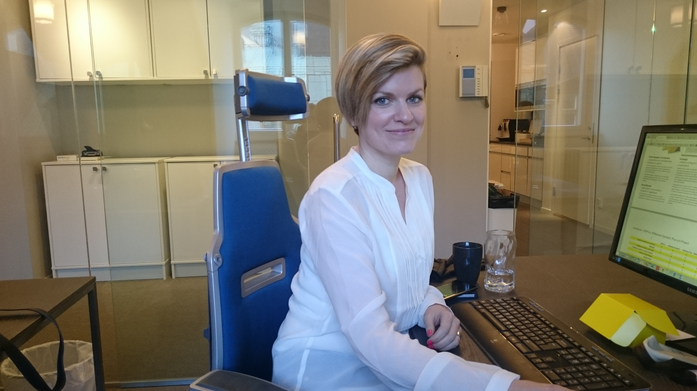
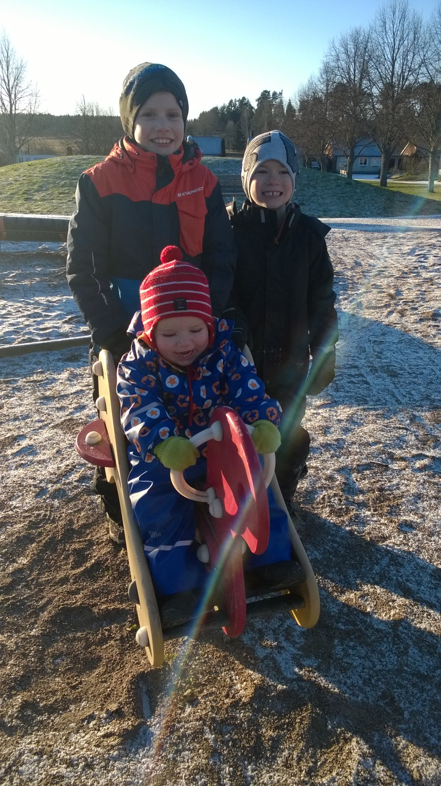

Interview Företagsplatsen #3: Louise Axhake
Interview with Louise Axhake
It's been almost six months now since I moved to Stockholm, working full-time at Företagsplatsen as a software engineer, and this is the third post of my series of interviews of my colleagues.
Louise joined the team in January. She was previously working at PwC, one of our customers. We started doing this interview on her first week in the team, and I've been working with her for a month now, which has been a lot of fun!

Figure 1: Louise Axhake
Hi Louise, thanks for taking this interview. Can you start by telling me a bit about yourself?
Hi Nico, here we go!
My name is Louise Axhake, I was born in the summer of 1981 on Öland, an island south east of Sweden and I have since then moved up through the country and are now living in Uppsala just north of Stockholm. I live there with my husband Anders and our three sons; Hector, Sixten and Fred.
I'm the newling at Företagsplatsen, writing this I'm on my way to my third day. Before I worked with one of our clients with system and project management and also some marketing and communication. I don't have any academic background to talk about, I'm just very curious and want to know as much as possible about as much as possible. 😉
Figure 2: Louise the family woman
How was your first week in the team?
My first week was good! I have known Anders since 2009 if I remember correctly. Företagsplatsen is a supplier for the company where I used to work, us knowing each other kind of helps not feeling like a complete stranger. I like that this is a way smaller company, that everybody counts, no one disappears in the crowd.
You have all been very welcoming to me, I don't have any less good stuff to tell, not yet at least ;)
What does a typical day at work look like?
It's too soon to say anything about at typical work day for me, there's still things to figure out how it works around here, so I guess that's what I do, figuring things out.
But I can tell that my work days usually starts on the train, today I took my kids to school so I'm going to be at the office around 9:30 am, that's like one hour after the train left Uppsala.
The days that I don't have the kids in the morning I start off a bit earlier getting on a train 7:10 or 7:20 am, I pick up my computer almost right away and go through my mail and if I missed anything on Slack I catch up on that. So far I have read a lot about Microsoft's Office 365, to say it simple, it's a platform were a company can share information both internal and external. I'm trying to find out how we can get the most out of it, get all our "stuff" in one place and really easy to find. This week I will also begin the work with the communication to our clients about the release of our new version. And I guess, some testing.
What are you main hobbies?
This is where I wish that I could say that one of my biggest hobbies is to work out, running or something healthy like that. But no.
I used to read a lot, before I had kids, now I'm either always interrupted when I try to or too tired.

Figure 3: Louise's kids
Now I'm more hooked on TV series, that doesn't take to much of an effort and is kinda nice and relaxing to do when the kids are asleep. I watch all kinds of genres. Game of Thrones, Breaking bad, Sons of Anarchy, House of Cards, Californication, Orange is the new black, True blood and the list goes on and on. You could say this is my second addiction.
You really made me ask: What is your first addiction then?
Sugar candy.
During his interview, Johan had a question for you: what is you biggest concern with your new job? To be the only girl or to work with french people;) ?
First, thank's for calling me a girl, that's nice comparing with "tant" (swedish word for old lady), that some random parent at my kids school called me this morning when talking to his kid.
I would say working with french people, and that sounds really bad, I know. And I wouldn't call it a concern, more a challenge for me, who never speaks anything but Swedish, now need to translate everything in my head before talking. And maybe it's not even a concern anymore, kind of gotten used to it by now. You french guys are the best!
If you were doing an interview of one of your colleagues, what question would you ask him?
What do you think that your personality can provide to Företagsplatsen, as a co-worker, that no one else at this company can?
Thank you Louise for this interview!
comments powered by Disqus